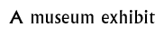

Follow-up 7  |
|
Objectives: To learn about museums and create a museum exhibition about ancient India.
Materials: Photographs, pictures, and postcards of ancient Indian objects, replica artefacts. Photographs or postcards of museums rooms, galleries and displays.
Class set-up: Whole class and small groups. This activity could be altered for individual work.
Vocabulary: Curator, exhibit, exhibition, collection, artefacts,
Activity: Discuss the purpose of a museum with pupils. Ask them to think about their experiences with museums. What is a museum? How is a museum used? Why are museums important? Who goes to a museum? What does the audience want to see?
Ask pupils to imagine they are curators working in a museum and tell them that it is their job to create a museum exhibit about ancient India (you could suggest that they play the Time Challenge to learn about what museum staff do). Create a scenario explaining why the museum wants them to put on an exhibition of ancient Indian objects. Then introduce them to the 'collection'. Show them some photographs or pictures of ancient Indian objects or artefacts. Make a list of themes or topics related to ancient India with the class that they enjoyed learning about. Decide which theme or topic the exhibit will cover and discuss the theme or topic as a class.Ask pupils to think about how museums present objects and what support materials are provided in exhibitions such as labels, gallery guides and tours. Ask pupils to think of some of the objects that might be important to include in this exhibit on ancient India. Instruct them to choose a type of object they would like to include in the exhibit. Provide them with books, guides, postcards and access to the site so they can choose what they would like to include.If the children are working in groups they should try to divide up their tasks in making their exhibits. One could draw an artefact or mount and display a photograph or cutting from a magazine. If replica artefacts are available, the children could work out how best to display them, possibly making display cabinets using boxes etc. One of the children in the group could be responsible for producing labels or guide pamphlets using their ICT skills and publishing documents to a high standard. Discuss museum labels with class. What is their purpose? What type of information do they present? What style are they written in? What sort of information needs to go in them?Arrange and display the objects in table-top and wall displays. Discuss with the children how the displays might be arranged (chronologically, by materials, themes or topics). Arrange and display the objects in table-top and wall displays. Discuss with the children how the displays might be arranged (chronologically, by materials, themes or topics).Background information:
This will depend on the theme chosen for your exhibition, but listed below are
information sheets on general themes that might be particularly appropriate.Writing Trade Crafts Agriculture Early Hinduism The Buddha Language
© The British Museum |